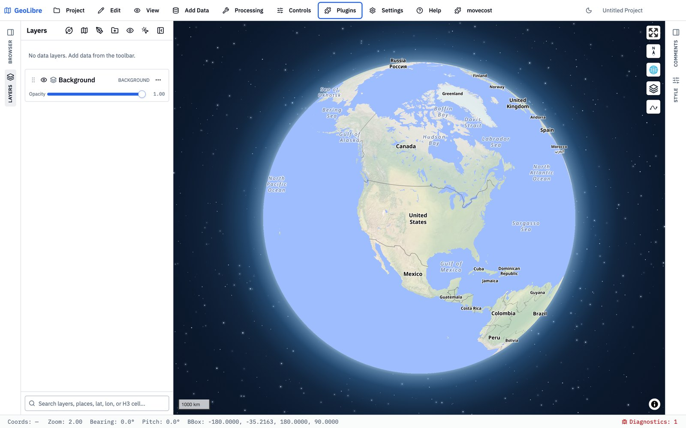
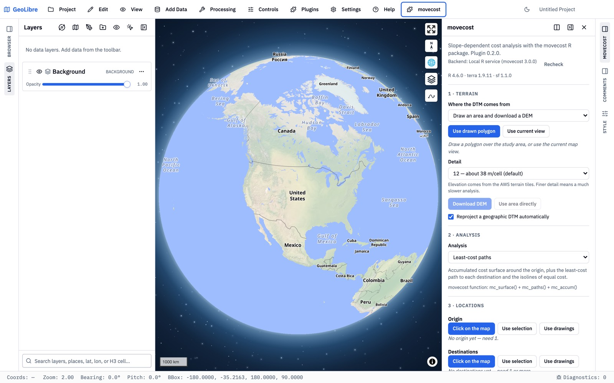
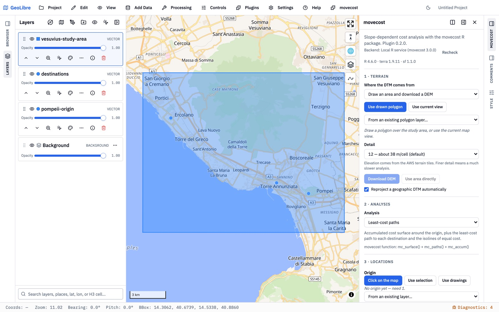
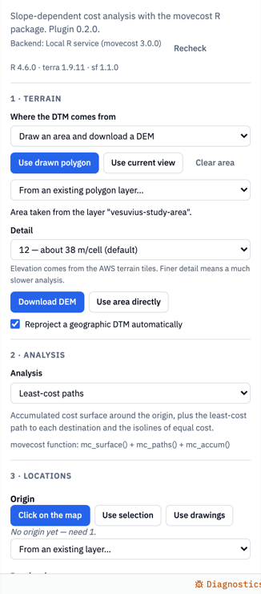
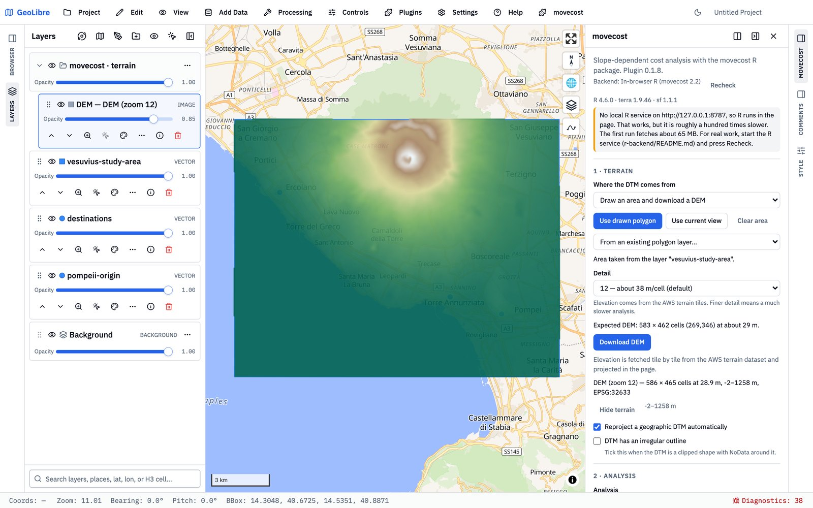
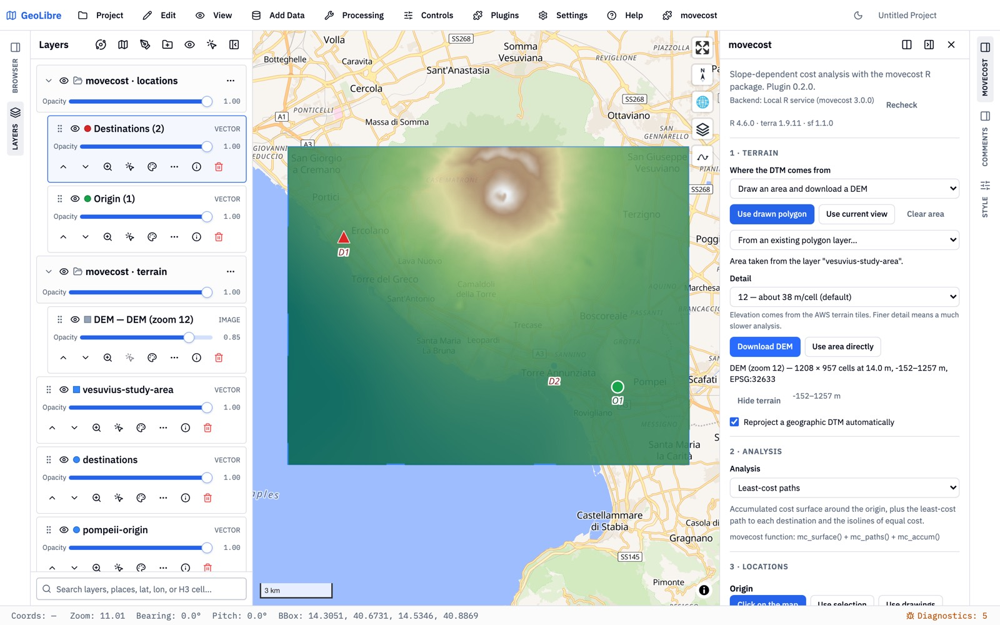
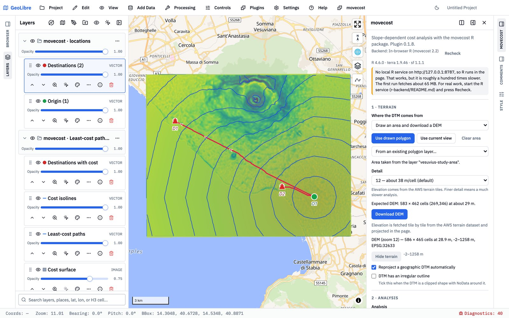
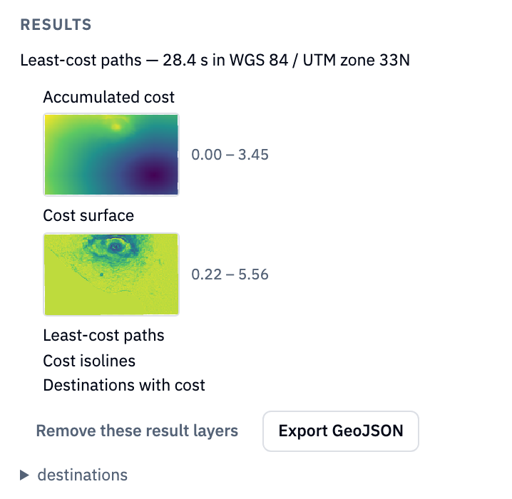

movecost for GeoLibre
Least-cost paths, corridors, networks, cost allocation and isochrones on a digital terrain model, with the movecost R package — inside GeoLibre, on the desktop and on a tablet.
1. What it does
Given a terrain model and one or more locations, the plugin computes how costly it is to move across the landscape, and where the cheapest routes run. Cost is a function of slope — walking time, energy, or a relative effort — chosen from the published functions movecost implements — from Tobler's hiking function to metabolic models such as Pandolf's. The terrain can be downloaded on the spot for any drawn area, so a first analysis needs no data of your own.
Everything the plugin draws — the DEM, the origins and destinations you place, the paths, isolines, zones and cost surfaces — is an ordinary GeoLibre layer: styled, grouped, persisted with the project, exportable.
2. Installing
From the plugin registry (desktop, iPad, Android)
Open Plugins → Manage Plugins, find movecost — least-cost analysis and press Install. Updates appear there as an Update button. Then activate it from the Plugins menu; a movecost menu and a map button appear.
From a manifest URL
If the registry does not carry the plugin yet, add the manifest URL under Manage Plugins → Settings → Manifest URLs:
https://enzococca.github.io/geolibre-movecost/plugin.jsonplugin-<version>-<build>.json): remove the old URL, add the new one.From a zip (desktop only)
Manage Plugins → Settings → Install from file with movecost-<version>.zip from the releases. The mobile builds cannot install from a file.
3. Where R runs
The analysis is R code (movecost, terra, sf, igraph). The plugin can run it in two places, and says which at the top of its panel:
| Backend | What it needs | Speed |
|---|---|---|
| In-browser R (webR) | Nothing: R compiled to WebAssembly is fetched on first use (about 65 MB, cached afterwards). Works on the iPad. | Seconds to a minute for a modest area; limited by the browser's memory (see §8). |
| Local R service | R on the same computer with the packages installed and the small service in r-backend/ started; the plugin finds it on 127.0.0.1:8787 and offers Recheck. | Roughly a hundred times faster, no cell limit worth mentioning, and it can hand the study area straight to movecost. |
# once
install.packages(c("plumber", "movecost", "sf", "terra", "jsonlite", "elevatr", "progress"))
# each session, from the plugin's folder
Rscript r-backend/start.Rmc_surface() and reuses it across the analyses, so changing only the destinations or the cost limit is nearly instant. In the browser the package comes from the plugin's own WebAssembly repository, since the public one still carries 2.2 — nothing to configure.4. Walkthrough: Pompeii to Herculaneum and Oplontis
A least-cost path analysis around Vesuvius: from the Forum of Pompeii to Herculaneum and to the Villa Poppaea at Oplontis. The three files used here are on the plugin site, so you can repeat every step: pompeii-origin.geojson, destinations.geojson, vesuvius-study-area.geojson.
Activate and open the panel


Load the locations and the study area
Add Data → Vector Layer, paste each URL and press Load. Any point layer can serve as origins or destinations, and any polygon layer as the study area; you can equally draw them with GeoLibre's draw tools or click points straight onto the map.

Terrain
In 1 · Terrain, keep Draw an area and download a DEM and choose where the area comes from: a polygon drawn on the map, the current view, or an existing polygon layer. The Detail level sets the cell size (level 12 is about 38 m at the equator, 29 m at Vesuvius; each level halves it). Before anything is downloaded the panel says how large the DEM will be, and whether it has to coarsen the level to fit in memory.

Press Download DEM. Elevation comes tile by tile from the AWS terrain dataset, is projected to the local UTM zone and masked to the area. The DEM appears on the map as a layer in a movecost · terrain group, with its elevation range in the panel.

Locations
2 · Analysis stays on Least-cost paths. In 3 · Locations each set of points offers the same sources: Click on the map (each click adds a point; origins are green circles, destinations red triangles, labelled O1, D1, D2 as the engine will name them), Use selection, Use drawings, or a layer from the list. Here Pompeii comes from its layer as the origin and the two sites from theirs as destinations.

Run
4 · Cost function keeps Tobler's on-path function, with cost in hours. Press Run analysis. In the browser the first run also fetches R and the packages; the progress bar says what it is doing. The results arrive as a group of layers, movecost · Least-cost paths #1: the accumulated cost surface and the cost surface as rasters, the isolines of equal cost, the least-cost path to each destination, and the destinations with their cost as attributes.


Run again with another cost function and the new group sits beside the first one, so results can be compared; Remove these result layers drops the latest run, and the Layers panel removes any group.
5. The six analyses
| Analysis | movecost | Locations | Produces |
|---|---|---|---|
| Least-cost paths | mc_paths() | 1 origin, 1+ destinations | Accumulated cost surface, cost surface, isolines, a path to each destination (optionally the return paths), destinations with cost. |
| Least-cost corridor | mc_corridor() | 2 locations | The corridor of low combined cost between them — symmetric (“reach”) or only the routes that actually go A → B (“through”), optionally rescaled 0–1 — and the path each way. |
| Least-cost network | mc_network() | 2+ locations | Paths between all pairs or between neighbours, the cost matrix, and optionally a path-density raster. |
| Cost allocation | mc_alloc() | 2+ origins | Every cell assigned to its cheapest origin, as zones and as a raster; optional isolines. |
| Cost boundaries (isochrones) | mc_boundary() | 1+ origins | The area reachable within given costs (e.g. 1 and 2 hours), as polygons with their area and perimeter. |
| Ranked alternative paths | mc_rank() | 1 origin, 1 destination | Several plausible routes ranked from optimal downwards, with the corridor they run through; a detour penalty controls how far apart they are pushed. |
Barriers — lines or polygons that movement cannot cross, such as a river, a cliff line or a wall — can be given from drawings or a layer for every analysis; a conductance value makes them merely expensive rather than impassable.
6. Cost functions
All 26 movecost cost functions are available, grouped in the menu by what they measure:
| Group | Functions | Cost unit |
|---|---|---|
| Walking time | Tobler (on-path, the default, and off-path), Márquez-Pérez et al. (modified Tobler), Irmischer-Clarke (male and female, on- and off-path), Uriarte González, Marín Arroyo, Alberti (pastoral foraging excursions), Garmy-Kaddouri-Rozenblat-Schneider, Rees, Kondo-Seino, Tripcevich | hours or minutes |
| Metabolic energy | Pandolf et al. (with and without the downhill correction), Minetti et al., Herzog, Van Leusen, Llobera-Sluckin, Ardigò et al., Hare | Megawatts, J/(kg·m), kJ/m or cal/km, as each function defines it — the panel names the one in use |
| Abstract cost | Relative energetic expenditure, Bellavia, Eastman | dimensionless |
| Wheeled vehicles | Wheeled-vehicle critical slope | dimensionless |
Functions that need them show their parameters: walker weight, load, terrain factor and speed for the metabolic ones; the critical slope for the slope-limited ones. Common options are the number of movement directions (8 or 16 — 16 is smoother and twice as heavy), cognitive slope (slope as perceived rather than measured), and topographic rather than planimetric distance.
7. Reading the results
- Accumulated cost — for every cell, the cost of reaching it from the origin, in the function's unit. The isolines are its contours; their interval can be set in the analysis options, and is a tenth of the range if left alone.
- Cost surface — the per-cell cost of crossing, before accumulation; it shows where the terrain itself is hard.
- Least-cost paths carry the total cost to each destination; with Also compute the return paths the way back is drawn too, since slope-dependent cost is asymmetric.
- Rasters are layers of the image kind: the Layers panel's opacity slider and visibility toggle drive them, and the panel's Raster display section sets the colour ramp and opacity of the next run.
- Export GeoJSON in the Results section writes every vector result of the run with a
mcx_layerattribute; rasters stay on the map as image layers.
8. Size, memory and speed
Cost-distance work grows with the number of cells: movecost builds a transition matrix with one entry per cell and direction. In the browser it must fit the WebAssembly heap, which on an iPad is a few hundred megabytes, so the plugin keeps to a cell budget — about 150,000 cells on a tablet, 400,000 in a desktop browser — and lowers the detail level automatically when an area exceeds it, saying so under Detail. For a valley a 75–150 m DEM is usually adequate; for a site's surroundings, a smaller area at 20–40 m is the better trade. The local R service has no such ceiling.
Two further habits help: start with 8 movement directions (the tablet default) and move to 16 once the area is settled; and download the DEM once rather than using Use area directly when comparing cost functions.
9. Troubleshooting
| Symptom | Cause and remedy |
|---|---|
| "cannot allocate vector" / "memory exhausted" | The DEM is too large for the backend. Choose a coarser level or a smaller area, or 8 directions; or start the local R service. |
| "changed since you last trusted it and was not loaded" | An updated manifest-URL install on a mobile build: add the per-build manifest from the plugin site instead (§2). |
| The first run takes minutes | webR and the R packages are being downloaded (about 65 MB). They are cached; later runs take seconds. |
| "Panel says In-browser R" on the desktop although R is installed | The service is not running: Rscript r-backend/start.R, then Recheck. |
| Results land in the wrong place | An uploaded DTM without a CRS, or in a geographic one with Reproject automatically off. Give the file a projected CRS or leave the option on. |
10. Citing
Alberti, G. (2019). movecost: An R package for calculating accumulated slope-dependent anisotropic cost-surfaces and least-cost paths. SoftwareX, 10, 100331. doi:10.1016/j.softx.2019.100331
The plugin: Cocca, E. (2026). movecost for GeoLibre. github.com/enzococca/geolibre-movecost.